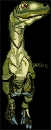
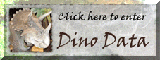

hopelijk vind je deze pagina leuk

zoals staurikosaurus die leefde 225miljoen jaar geleden ongeveer
Deze pagina is gemaakt door Mattijs Mientki
|  | hallo welkom op deze dino
pagina
hopelijk vind je deze pagina leuk |
 |
|
dinos
leefde heel lang geleden
zoals staurikosaurus die leefde 225miljoen jaar geleden ongeveer |
|
| dit is de euoplocephalus |